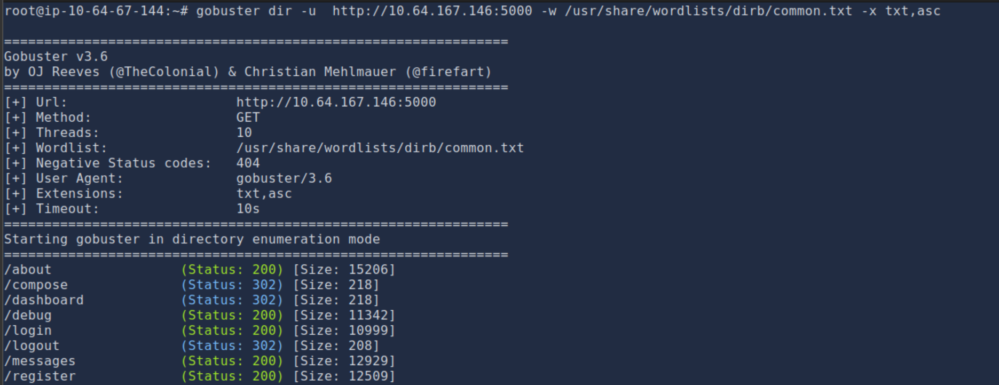
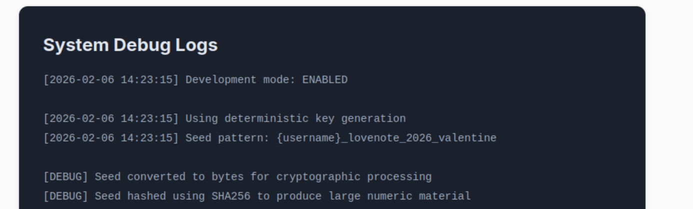
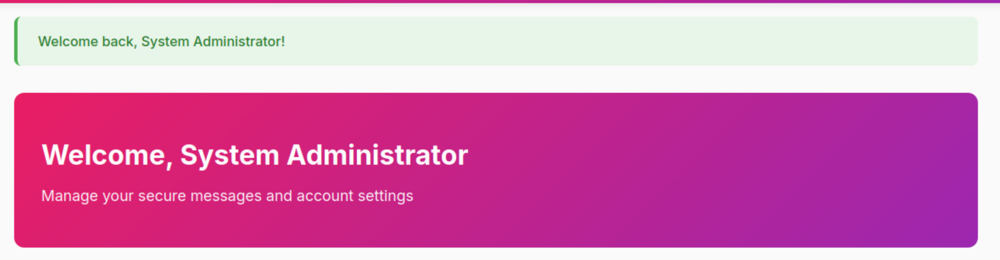
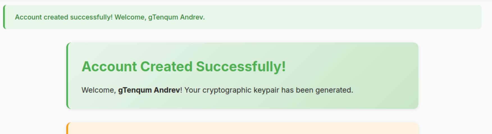
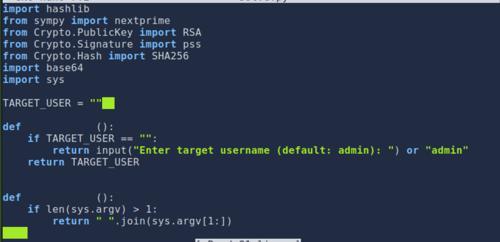
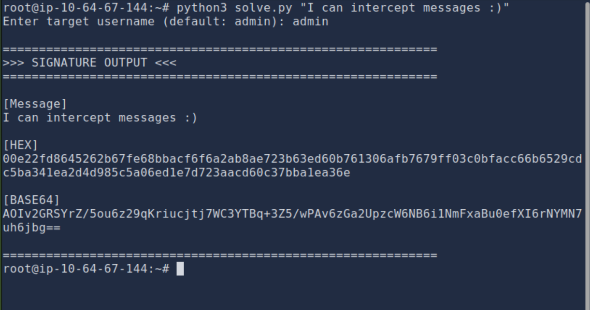
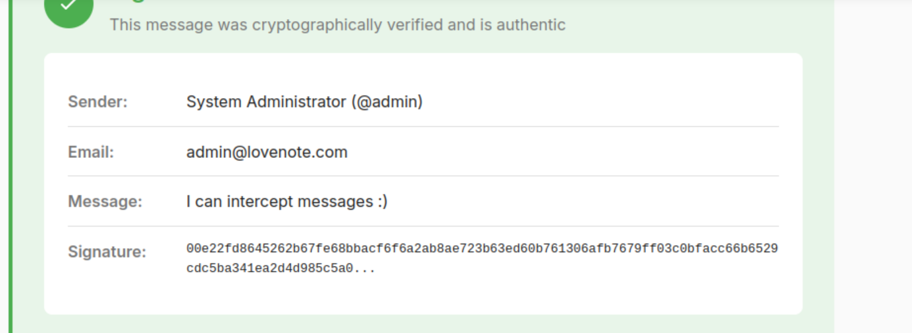

Overview
Signed Messages is a TryHackMe room focused on understanding digital signatures and message authentication. The challenge explores how cryptographic signing works, how to verify the integrity and authenticity of messages, and the consequences of improper signature validation. It reinforces core concepts in applied cryptography that are essential for both offensive and defensive security practitioners.
Walkthrough
Step 1 —

What I did here was I used gobuster to enumerate directories and files on the target server.
Step 2 —

In this step, I went to the debug endpoint of the website where I found sensitive information that could be exploited.
Step 3 —

I was able to login as Admin due to their being no password set.
Step 4 —

I decided to logout of Admin and create a new user account to start exploiting the system from a different perspective.
Step 5 —

I developed a script to exploit a deterministic RSA key generation flaw, allowing me to reconstruct private keys from usernames and forge valid signed messages.
Step 6 —
View the full script (customsolver.py)

I modified a script so that way I can be able to forge signed messages as the admin.
Step 7 —

I was able to successfully forge a signed message as the admin, demonstrating the vulnerability in the deterministic RSA key generation.
Step 8 —
Here, is where I was able to find the flag the flag is THM{PR3D1CT4BL3_S33D5_BR34K_H34RT5}
Summary
This challenge highlighted the importance of secure key generation and the risks associated with deterministic cryptographic operations. By exploiting a flaw in the RSA key generation process, I was able to forge valid signed messages, demonstrating the potential impact of such vulnerabilities.
This challenged also shows that this website should have passwords set for all user accounts to prevent unauthorized access.
Tools Used
- Python — scripting cryptographic operations.
- Gobuster — directory and file enumeration.